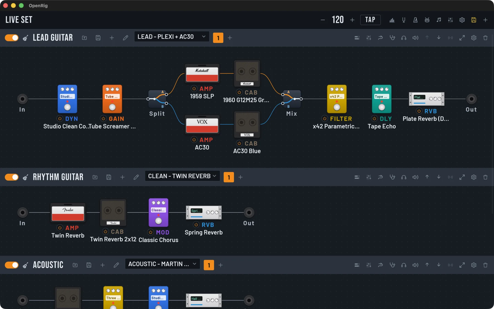

Free · Open source · macOS
700+ pieces of gear, from a Marshall 1959 SLP to a Tube Screamer, played through the audio interface you already own.
No account, no subscription, nothing locked behind a paywall.
